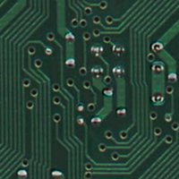

Who am I?
I am a programmer who loves to build things
Programming
I love to program and I have delved into many languages over the years of my school and college life. See the languages I have learned.
See works »

Circuit Designer
I like to apply concepts instead of just keeping them in my brain. Read more about in which projects I have actually applied them.
See works »My Websites
Yup! I have created websites which are also being used by my fellow students. And I also have some articles in my own personal blog.
See works »
*NIX
I am quite familiar to the *nix systems and primarily use them on my personal machines. I have been using linux since my school days
See works »Workshops
I have attended countless workshops in my college life on myriad of topics like Bootstrap, robotics etc.